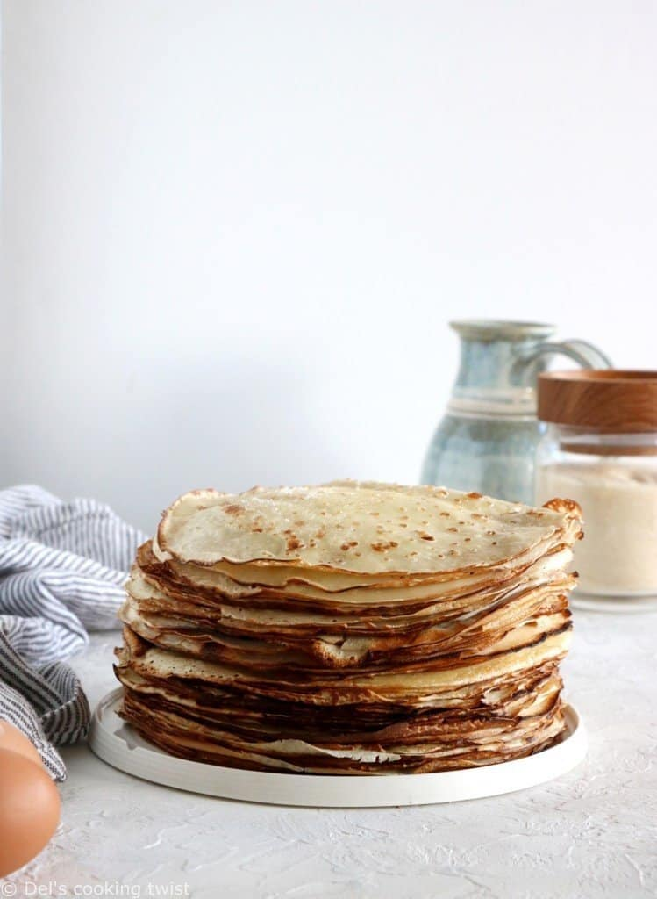

Crêpes recipe

Description
A quick and easy pancake batter recipe for light, thin pancakes for any occasion. This is THE recipe to keep all your life and learn by heart.
Ingredients
- Flour
- Butter
- Eggs
- Sugar
- Milk
- Vanilla Extract
- Salt
Steps
- Pour the flour and salt into a bowl and make a well in the centre.
- Break the eggs into the well, then add the melted butter (and sugar if using).
- Whisk vigorously, starting from the centre and pouring in the milk a little at a time.
- Cover the dough and leave to rest for 2 hours